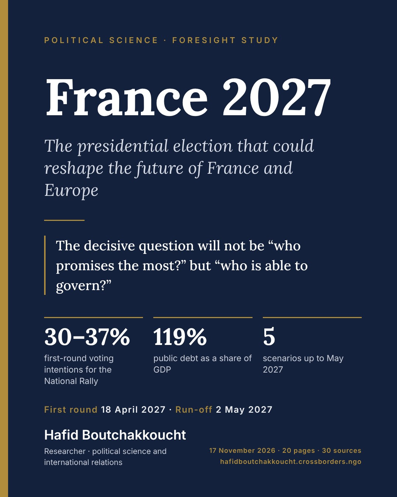

← Library · Political science and foresight study · Political science
France 2027
The presidential election that could reshape the future of France and Europe
Download the PDF · 20 pagesRead onlineCite this study
- Author
- Hafid Boutchakkoucht
- Published
- 17 November 2026
- Type
- Political science and foresight study
- Language
- Full text in French
- Approach
- Comparative political science, electoral sociology and strategic foresight

Study poster

The study in figures
- 30–37 %
- first-round voting intentions for the National Rally, early November 2026
- 119 %
- public debt as a share of GDP, end of June 2026
- 5
- scenarios up to May 2027
- 30
- numbered sources
Figures taken from the study.
Commentary
This study does not try to name a winner. It shifts the question from a contest of promises to the capacity to govern. It confronts polls, official statistics and the candidates’ public positions with the major theories of party systems, from Duverger to Peter Mair.
Key takeaways
- The National Rally leads the first round with 30 to 37% of voting intentions, but still needs to gain nearly twenty points to win the run-off.
- The Court of Cassation’s ruling on Marine Le Pen’s eligibility is expected by early April 2027 at the latest, days before the first round.
- The Socialist Party handed the candidacy to Raphaël Glucksmann; it remains an electoral machine, a negotiator of the platform and an arbiter of the run-off.
- Ukraine is the campaign’s strategic dividing line: a change of course in France would weigh on European cohesion and on the transatlantic relationship.
Who this text is for
Policymakers, diplomats, political journalists, researchers and students in political science and international relations.
Abstract
This study analyses the French presidential election of 18 April and 2 May 2027 around one thesis: the vote will not turn on who promises the most, but on who is able to govern. With data as of 17 November 2026, it maps the political forces, shows that the Socialist Party chose to remain an autonomous actor without its own candidate, compares the parties’ programmatic orientations and measures the constraints the next president will not choose: public debt at 119% of GDP, a fragmented Parliament and a war on the Union’s doorstep. It sets out five scenarios, a matrix of decisive variables and the implications for Europe, the United States and Morocco.
Résumé (français)
Cette étude analyse l’élection présidentielle française des 18 avril et 2 mai 2027 à partir d’une thèse : le scrutin ne se jouera pas sur la question « qui promet le plus », mais sur la question « qui peut gouverner ». Arrêtée au 17 novembre 2026, elle cartographie les forces en présence, montre que le Parti socialiste a choisi d’être un acteur autonome sans candidat propre, compare les orientations des programmes et mesure les contraintes que le prochain président ne choisira pas : une dette publique de 119 % du PIB, un Parlement fragmenté et une guerre aux portes de l’Union. Elle propose cinq scénarios, une matrice des variables décisives et une lecture des conséquences pour l’Europe, les États-Unis et le Maroc.
Cite this study
Boutchakkoucht, H. (2026). France 2027 : l’élection présidentielle qui peut redessiner l’avenir de la France et de l’Europe. Political science and foresight study, 17 November 2026. https://hafidboutchakkoucht.crossborders.ngo/publications/france-2027/
Read online
If the reader does not display on your device, use the download button.
Download the PDFWrite to the author
Another studyLeave, Stay or Be Heard